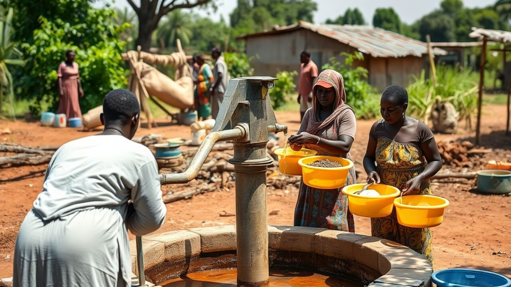
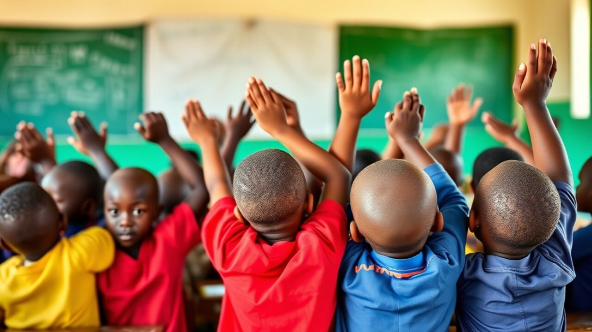
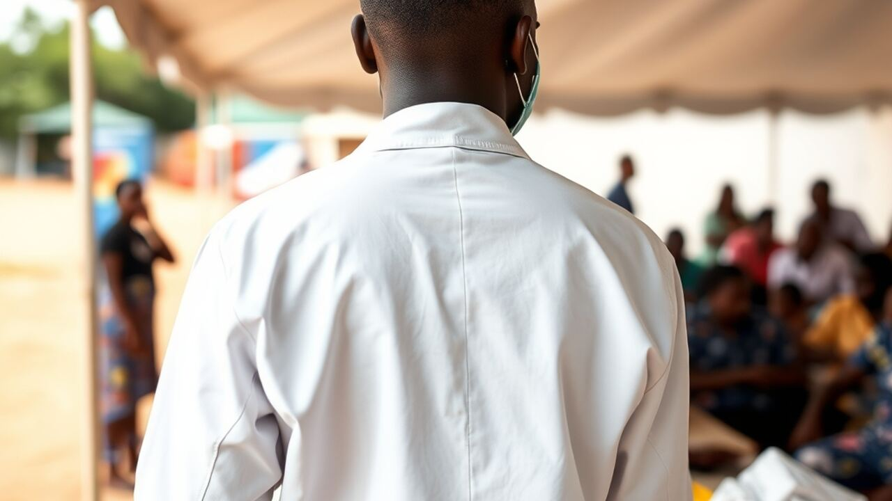
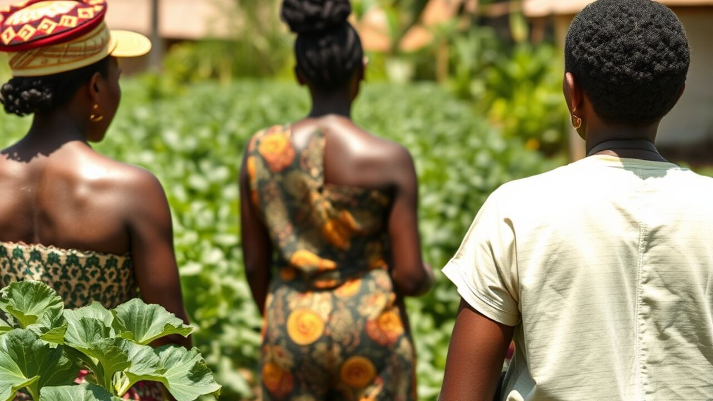

Éducation
Kits scolaires et parrainage d'élèves
Éducation, santé et accès à l'eau pour les familles des quartiers et des villages.
Kits scolaires et parrainage d'élèves
Journées de dépistage gratuites
Forages dans les villages
Formation et microcrédit

Mains Solidaires est une association reconnue qui agit avec les communautés, pour des résultats qui durent.
Chaque franc reçu est suivi et un rapport est publié chaque année.



Grâce au forage, nos enfants ne marchent plus des kilomètres pour l'eau.
Le parrainage a permis à ma fille de continuer l'école.